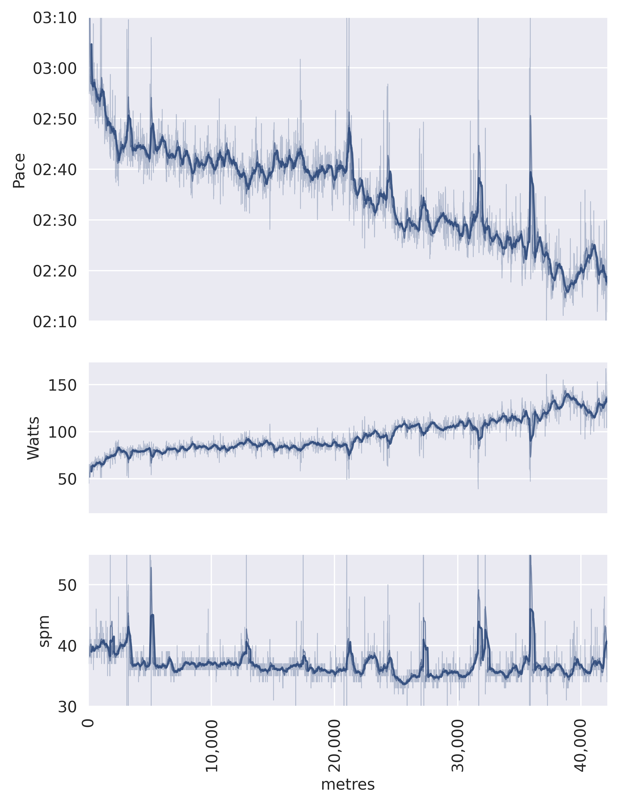
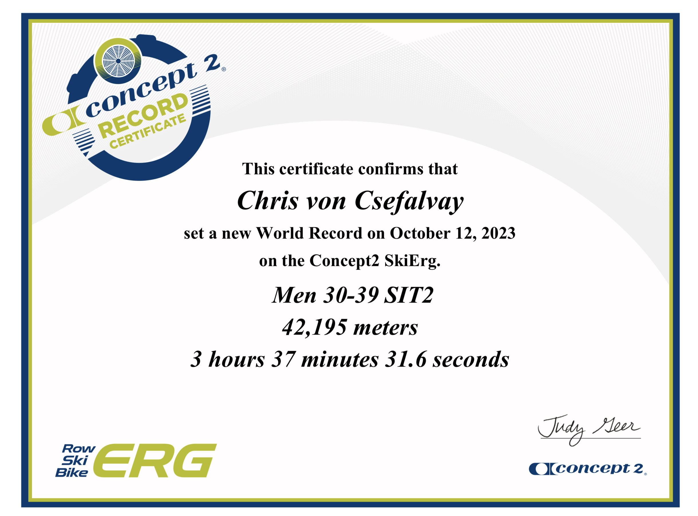

![]()

How to do a SkiErg marathon entirely the wrong way (but still finish)
fitness
SkiErg
How to eat the wrong way, rest the wrong way (i.e. not), half-ass all relevant parts of preparation for a marathon and still finish with an okay time.
Yesterday, I completed a marathon on the SkiErg, with a pretty respectable time (see results here). I know I can do better, and I know I will do better. On the other hand, this was a marathon where I pretty much did everything wrong. And that was sort of an instructive experience in its own right.
The title is somewhat misleading. Not much went wrong – the marathon itself was smooth sailing. At a 2:34.6 pace (min/500m), it was one of my better very long distance pieces – my ranked half-marathon pace at the time was 2:30.7, and that was a very intentional, very prepared piece. There were also really no unexpected surprises in the process. On the other hand, I built up to this marathon the in worst way possible.
What worked for me
It’s probably important to be realistic ahead of all: I did go into this madness with some assets.
- For one, I’m a multiple world record holder in my adaptive class. I know a thing or three about the SkiErg, and as a former rower, I’ve got every rower’s love-hate relationship with the erg.
- I’m a former multisport athlete, and I’ve been doing a lot of long distance pieces. I know how to cope with the boredom. Most people who go into a marathon have done a half, and maybe a 30k piece. I’ve done several split marathons in the past few weeks, as well as several 30k pieces.
- I’m probably in a pretty good state of overall fitness. I have enough of a gym habit to qualify as not exactly a couch potato. There’s a lot you can get away with if you have a decent \(VO_{2_{max}}\), and even though I’m in a wheelchair, I do enough activity to stay in good enough cardiovascular fitness.
- I have an incredible boredom tolerance. Marathons are primarily psychological: we’re just not used to doing the same one thing, without interruption, for 3-5 hours anymore.
- I guess insofar as there’s such a thing as a genetic predisposition to be good at long distance physical activity, I’ve got the right genes. My dad is a multi-marathon athlete, so I likely have the right physiology.
How not to do a marathon
There are generally three commonly accepted things to do for a good long distance piece:
- get some rest,
- carb load, and
- if you’re not doing an organised race, have someone check in on you and help with things like hydration.
I’ve done exactly zero of these things. For starters, I did my marathon in the middle of 75 Hard, which in retrospect was not the best of ideas, as it meant that (1) I wouldn’t be able to take days off to rest, and (2) I wouldn’t be able to carb load as that would be outside my diet. I’ve also decided to do all this while my better half was away visiting family, so I was pretty much on my own.
At 2am.
Yes, that’s not a joke – I decided to do my marathon at a time when the world is falling apart at the seams, and so the only time I could find during which I could hope not to be interrupted with the latest crisis was late at night. So I woke up at 0130 hours, much to my dog’s chagrin, and headed down to my apartment building’s gym to torture myself for a few hours before the sun came up. Fortunately, the world decided to behave for those three and a half hours.
I tried to counteract this to some extent by doing something I generally dislike: carbohydrate gels. A long, long time ago, in a galaxy far away, I ran the Watford half-marathon when I was still into actually running (by far the only reason I remember where that half-marathon was is because it was so miserable). It was a bitter cold day, and it actually started snowing in the middle of the damn thing. To keep myself mostly sane and nourished, I took some of these 100kcal sachets of carbohydrate gel. What I didn’t know, of course, was that that stuff would glue your mouth together unless you consumed enough water… which I didn’t. Bad idea. On the other hand, I am now older, wiser and able to afford much better and less sticky-tastic carbohydrate gels, so I thought I was going to have some. I didn’t feel much of an effect one way or the other. At one 100kcal sachet for every hour, I paced it a little slower than is commonly recommended (one sachet per every 45 minutes seems to be the consensus recommendation), but really didn’t feel much of an effect either way. In retrospect, I probably wouldn’t bother doing it again.
As for rest, the best I could do is not do a long distance piece the day before the marathon. Indeed, I only did a relaxing 2k that day, which is about a fifth of my average daily SkiErg distance. Nevertheless, I think it was quite clear that with my ultra-low-carb diet, no carb loading and at best minimal replenishment (my average burn rate was around 5-600kcal/hr, and I took in 100kcal via the carbohydrate gels, so pretty much a drop in the ocean), I was running on fumes for most of it.

Takeaways
My key takeaway from this experience was that we all should do a marathon under suboptimal conditions. Yes, doing a long distance piece at Bataan death march levels of calorie deficit is probably not super healthy, but you learn some interesting things about your body in the process. For starters, I think it was an interesting illustration of the fact that one’s overall level of fitness – especially \(VO_{2_{max}}\) – matters a lot more than game day conditions. You can get away with a lot if you’re fit enough, up to and including running the show in quite sub-optimal circumstances.
Citation
BibTeX citation:
@misc{csefalvay2023,
author = {Chris von Csefalvay},
title = {How to Do a {SkiErg} Marathon Entirely the Wrong Way (but
Still Finish)},
date = {2023-10-13},
url = {https://chrisvoncsefalvay.com/posts/skierg-marathon},
doi = {10.59350/68s7b-8c778},
langid = {en-GB}
}
For attribution, please cite this work as:
Chris von Csefalvay. 2023. “How to Do a SkiErg Marathon Entirely
the Wrong Way (but Still Finish).” https://doi.org/10.59350/68s7b-8c778.